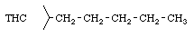
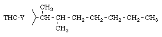
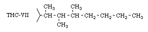
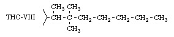
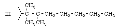
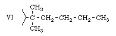
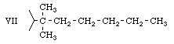

Appendix Ten
The THC variants described in this paper were prepared in the 1940's, neglected in the 1950's, then again investigated in the 1960's by the Army, as potential chemical warfare agents. Reports have appeared indicating that some variants have activities exceeding by several times that of LSD on a weight basis. These reports are difficult to evaluate (as is usually the case with psychedelics) since many studies are carried out on animals incapable of describing the subjective effects.
>From the Army's point of view LSD and THC-V have been of interest because of their high activity and potential for disrupting civilian populations. THC-V synthesis alternatives were extensively investigated in a report (Reference 407), in which the method I, given here, was developed as an alternative to the original method II used by the early workers. THC-V differs from natural THC only in the alkyl group of the right-hand ring;


Adams' work in the 1940's indicated that the greatest increases in potency were achieved by attaching methyl group branches to the carbon atoms close to the benzene ring, while at the same time the main chain was lengthened to seven carbon atoms.
In addition to THC-V, the investigation was concerned with the small-scale production of several other variants (actually only the preparation of the 5-(alkyl)-resorcinols was studied) Two of these variants can be prepared basically by the method given here and are designated THC-VII.

(which differs from THC-V only in that it has an additional methyl group on the third carbon atom), and THC-VIII;

(in which the additional methyl group is attached to the second carbon atom).
These THC-s are prepared from the 5-(alkyl)-resorcinols (designated in the report as II and IV) by the same condensation reactions as described in the main text section (i).
In addition to these materials the report gives incomplete information on the preparation of three other resorcinols (III, VI, and VII) in which the following side chains are found;



The synthetic method used for these materials is different from that given here. If it is desired to prepare them the original report should be consulted (also see Reference 412 for a simplified preparation of an intermediate).
It seems clear from the report that in 1962 the most potent known THC variant was still THC-V. The first three Army variants (from resorcinols II, IV, and III) are simple modifications of THC-V. Resorcinol VI will give a THC corresponding to natural THC (with the 5- carbon straight chain), except that two methyl groups are attached to the first carbon atom. Resorcinol VII provides a THC corresponding to the more potent THC-II, also with two additional methyl groups on the first carbon atom. It should be emphasized that no reports of the physiological properties of any of these Army variants have been located. They may be more, or less, active than THC-V, and it is possible that they may have toxic properties which would make experimentation with them dangerous.
There have been reports of Army development of THC-s more potent than LSD. This may be THC-V (effective at a human dose of 100 micro-grams (100/1,000,000 gram) while LSD is often used in doses of 300 micro-grams). (Note: the potency evaluation is based on to the production of visible signs of intoxication in animals. For psychedelic effect in man, even lower doses may be sufficient.)
THC-VII and THC-VIII are prepared by a procedure similar to that described in the main text of method I for THC-V, with the following alterations.
The condensation reaction (t) is carried out with 2,3-dimethylheptanonitrile (for THC-VII) or 2,2-dimethylheptanonitrile (for THC-VIII) instead of 2-methylheptanonitrile used for THC-V. The preparation of these alternative nitriles is given in Appendix Eight. The proper weight of either of these dimethylheptanonitriles for the reaction as described in (t) is 38 grams (0.27 moles). Distillation of the oil obtained after hydrolysis and ether extraction as in (t) gives a 50% yield of 90%, pure 3,5-dimethoxyphenyl-(1',2'-dimethyl-hexyl)-ketone (intermediate for THC-VIII; b.p. 138-142 deg C./ 0.25 mm. or 235-245 deg C./ 25 mm. (calculated), yield cat ?? grams) or alternatively 71% yield of 99% pure 3,5-dimethoxy-phenyl(1'-dimethyl-hexyl)-ketone (intermediate for THC-VIII, b.p. 134-136 deg C./ 0.19 mm. or 230-245 deg C./ 25mm. (calculated), yield cat ?? grams). In the nomenclature of (Reference 407 and 409) these ketones are called respectively 2-(3,5-dimethoxy-benzoyl)-3-methylheptane and 2-(3,5-dimethoxy-benzoyl)-2-methylheptane.
Although the calculated boiling points at 25mm. (water-pump reduced pressure) are given above, it may be that best results will be obtained by removing the solvent traces by distillation under reduced pressure (water-pump) then using the residue without distillation (or allowing the temperature to rise higher than necessary to eliminate the solvent). The relatively impure materials were used successfully in (Reference 407).
In the case of THC-VII and THC-VIII it is not possible to use the sequence (e)(f) to prepare the olefin. Instead the Wittig reaction is used (it can also be used for THC-V, but it is very much more expensive than the sequence (e)(f), which in that case gives excellent results). All the details in (Reference 407) are given below, for more information on the reaction (References 414 -415) can be consulted. Although it is not specifically mentioned in (References 407 or 409) Wittig reactions normally require complete exclusion of air, so that the use of a protective nitrogen atmosphere is essential.
A 500 ml. flask equipped with magnetic stirrer, nitrogen inlet, and dropping funnel is swept free of air by nitrogen and dried with a flame. A charge of 64.2 grams (0.18 mole) methyl triphenyl phosphonium bromide (commercial) in 150 ml. anhydrous benzene is added. Then 104 ml. of 15% butyl lithium solution (commercial) containing 11.6 grams (0.18 mole) butyl lithium is added dropwise from a dropping funnel over 75 minutes at 28-32 deg C. The color changes from white to deep orange. The resulting mixture is heated to 60 deg C. and then cooled. A solution of 49 grams (0.176 mole) of the desired ketone dissolved in 40 ml. dry benzene is then added at such a rate as to keep the temperature below 40 deg C. The mixture is then refluxed for two hours, cooled, and filtered to remove triphenyl phosphene oxide. The product olefin is isolated by distilling off the solvent at ordinary pressure. The crude residue need not be distilled itself, since it is contaminated only be small amounts of starting ketone and can be used directly in the reduction described in the main section (g). For identification purposes the olefin intermediate for THC-VII boils from 125-129 deg C./ 0.35 mm., and the intermediate olefin for THC-VIII from 113-119 deg C./ 0.25mm.
Appendix Nine
Appendix Eleven